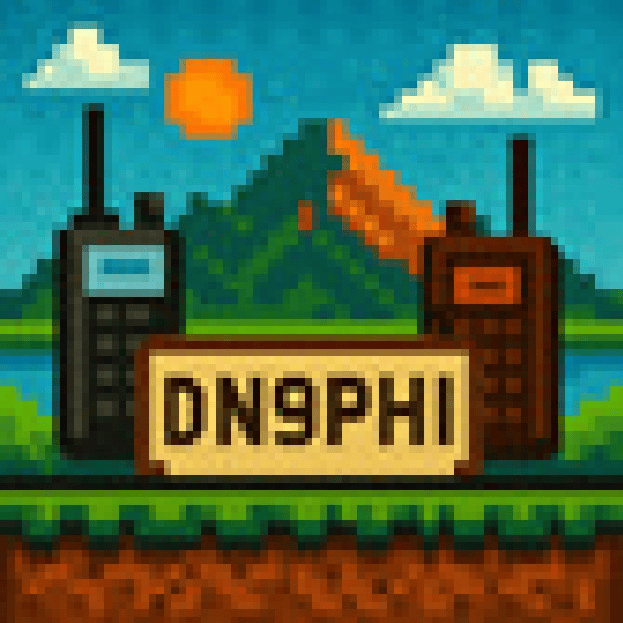

DN9PHI
Amateurfunk
Start
Über mich
Aktivitäten
SSTV/SSDV
QSL-Cards
TETRA
Übersicht
Frequenzerweiterung
Duplex-Tables
DMR
Logbuch
DIY
Blumentopfantenne
Programmierkabel MTM800E
Programmierkabel MTP-Serie
Links
Zurück
Übersicht
SSTV/SSDV
QSL-Cards
Zurück
Übersicht
Frequenzerweiterung
Duplex-Tables
Zurück
Blumentopfantenne
Programmierkabel MTM800E
Programmierkabel MTP-Serie
Wichtige Links
Eine Sammlung von Links rund um den Amateurfunk, meine Station und Projekte.
Kontakt & Soziales
QRZ: DN9PHI
E-Mail: dn9phi@darc.de
Winlink: dn9phi@winlink.org
Instagram: @darc_g11
DARC & Ortsverband
DARC e.V.
DARC G11 Leverkusen
DARC-QSL-Büro
Mesh & Digital
MeshRheinland
DigiPi
DigiPi PLUS
GridTracker
WSJT-X
WSJT-X Improved
G-Fliegt
Station & Technik
Xiegu G90 – WIMO
TYT TH-8600 – Amazon
Motorola MTM800E – Informationen
Motorola MTP6650 – Informationen
AnyTone AT-D878UV II Plus – WIMO
Quansheng UV-K5 – Amazon
Double-Bazooka-Antenne – WIMO